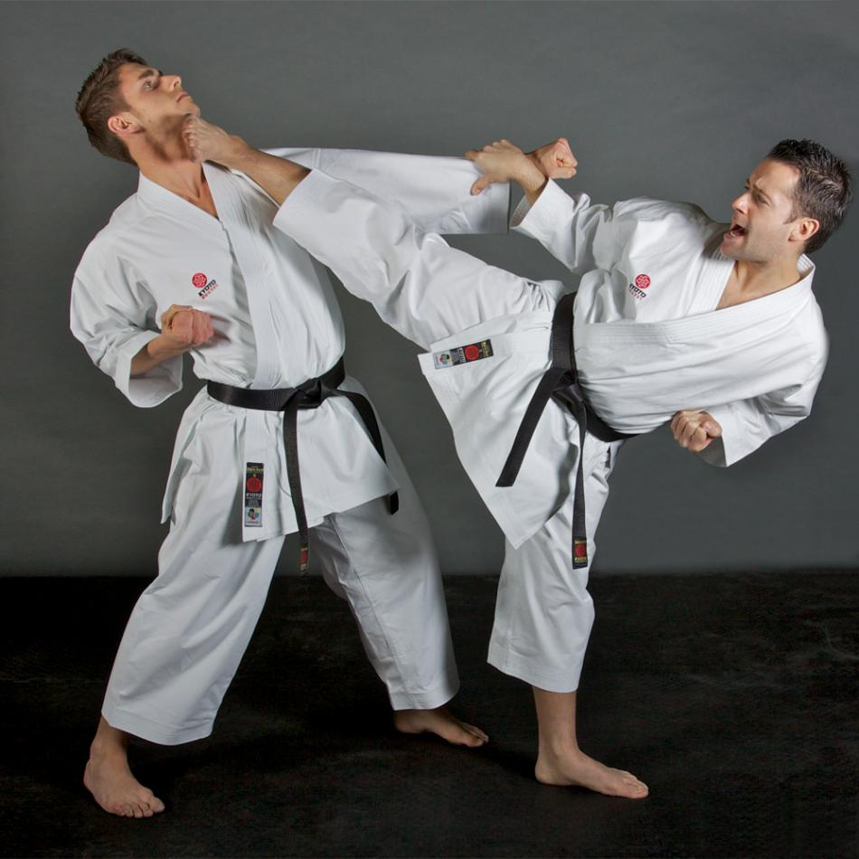
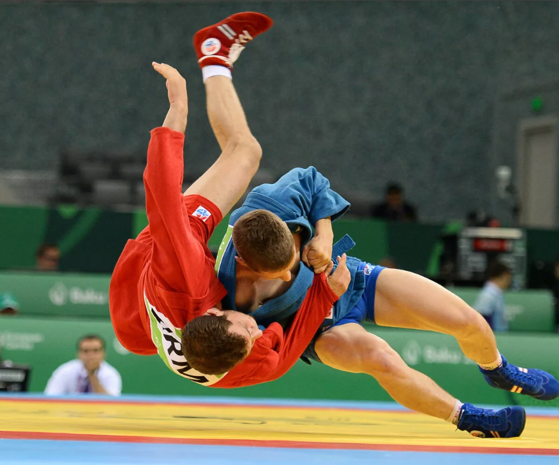
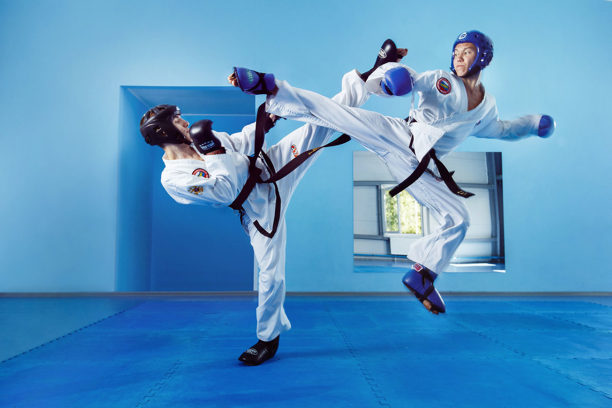

Виды боевых искусств
Кик-боксинг
По легенде его название и даже разработку стиля боя предписывают знаменитому актеру и естественно многократному чемпиону по кик-боксингу Чак Норису.
Переводиться кик-боксинг почти дословно как «Удары ногами и руками».
В идеале бои должны проходить в полную силу и по всем уровням, то есть удары ногами и руками разрешены в полную силу по всему телу.
Что позволяет кик-боксерам становиться довольно опасными противниками как в ринге, так и за его пределами, но все-таки это спортивная система и под уличный бой она изначально не заточена.

Греко-римская борьба
Классическая борьба представляет собой европейский вид единоборства, в котором сходятся в схватке два участника.
Основная задача каждого спортсмена – с помощью ряда различных элементов и приёмов уложить своего противника на лопатки.
Главное отличие греко-римской борьбы от других подобных единоборств – это запрет на осуществление каких-либо приёмов ногами (подножки, зацепы, подсечки и т.д.).
Также, нельзя делать захваты ног.

Каратэ
Каратэ («путь пустой руки») – японское боевое искусство, которое предлагает разные способы боя руками и несколько техник с применением оружия, включая холодное оружие.
В этом единоборстве не применяются захваты и броски.
Главный принцип – быстрота и скорость, а основная задача – сохранение на протяжении долгого времени основной стойки.
Поэтому в первую очередь в карате играет роль равновесие.

Самбо
Самбо принадлежит к уникальным видам единоборств, получивших распространение по всему миру.
Он стал единственным видом спортивных состязаний, где международное общение проводится на русском языке.
Различают два вида самбо, первым из них является боевое, используемое для защиты и выведения из строя противника.
Второй вид этой борьбы – спортивное самбо, способствует развитию личностных характеристик, закаляет характер и организм, позволяет выработать самообладание и дисциплину.

Тхэквондо
корейское единоборство.
Его характерной особенностью является то, что ноги в поединке используются более активно, чем руки.
В таэквондо можно с равной скоростью и силой наносить как прямые удары ногой, так и удары ногой с разворотом.
Боевому искусству таэквондо более 2000 лет.
С 1955 года это единоборство считается видом спорта.
